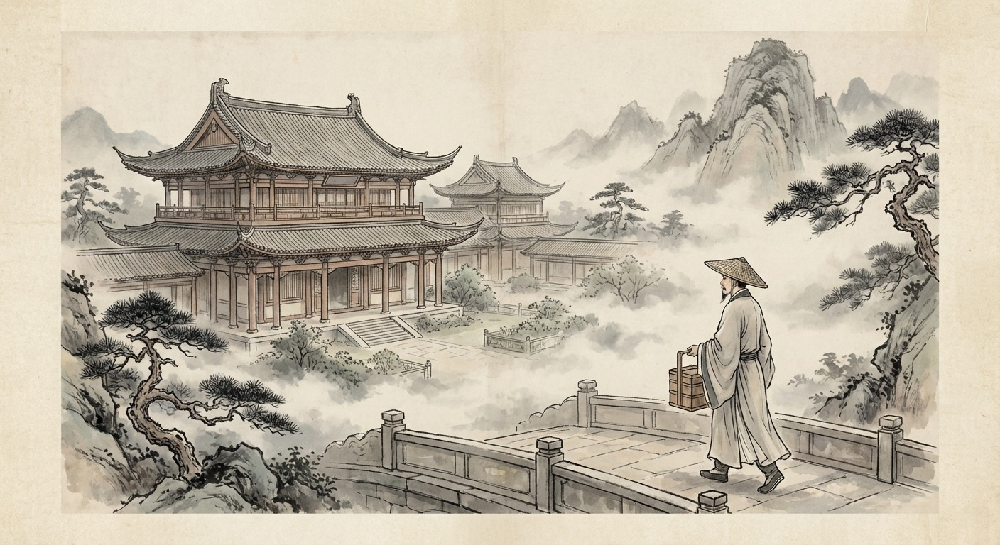
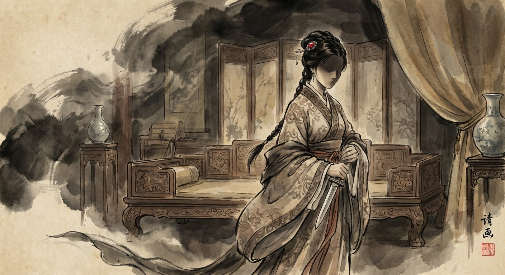
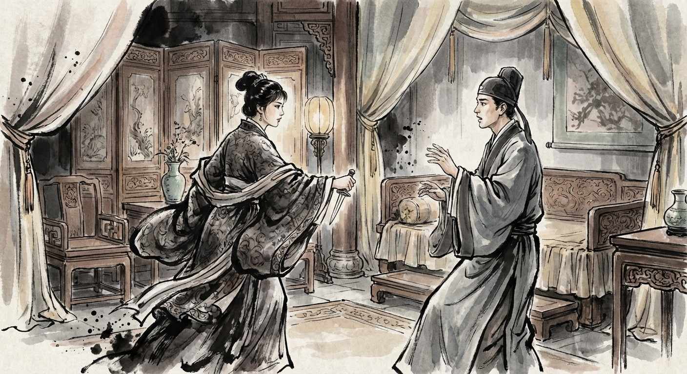

— 第一章 · 这一刀很温柔 —
大宋绍兴二十四年，临安城。
杨沅提着漆亮的食盒，大老远从城里后市街走到了皋亭山下。这年头送外卖叫"送索唤"，跑腿的叫"闲汉"。他就是个闲汉。
然而谁都不知道——这个送外卖的小哥，一年多前还是二十一世纪一家公关公司的王牌员工，阴差阳错地穿越到了这个时代。

接单的地方叫班荆馆——大宋朝廷专门招待金国使节的高级驿馆。照理说，一个送外卖的根本进不来。
可偏偏有个小丫鬟引路，守门的宋国士卒不敢拦，他就这么一路走进了内院最精致的房间。
房间里，金丝楠木的家具，袅袅香炉，满屋子贵气。
而一个金国少女，正盈盈地站在他面前。
她叫乌古论盈歌，金国贵女，辫发盘髻，额前一枚红宝石心形额坠。小辫子垂在肩上，涂了丹蔻的纤秀天足踩在柔软地毯上——三分刻意，七分天然。

杨沅心里只有一个字：假。
看看自己——草帽、短褐、皱巴巴的汗巾、快开线的草鞋。这副扮相跟"俊逸风流"有半毛钱关系？
更何况，杨沅前世是"有求传媒"的危机公关高手。什么仙人跳的套路没见过？
盈歌娇嗔着，一只素手搭上杨沅的肩——
门外突然传来急促的声音：
盈歌脸色一变，色诱失败，直接亮出了底牌。
翠袖翻落，一把藏在腕后的靴刀，一下子架在了杨沅的脖子上。

杨沅却更冷静了。越危急的时候越要冷静——这是无数次处理危机公关教会他的本能。
他三秒钟内推理出了真相：
她点外卖把自己随机叫来，想用"捉奸"的场面自污名声。目标不是杀他——是摆脱一桩不想要的婚约。那个即将到来的"小王子"，应该就是她不愿嫁的人。
盈歌眼睛猛然睁大——被猜中了。
杨沅声音压低，沉稳有力：
盈歌被说得蹙起了眉。她何尝不知道这些道理？可不下猛药，她根本没法跟完颜家解除婚约……
杨沅微微挺胸，报出了自己的前世名号：
盈歌一脸迷茫："什么传媒？啥公关？"
杨沅咳了一声，迅速切换话术：
门外脚步声越来越近。
盈歌急了："来不及了——"
杨沅突然伸出一根手指，把架在脖子上的靴刀推开。刀锋锋利，割破了他的指尖。
他转身扑向绣榻，抓起枕边一方雪青色的兰花绣帕——
然后把指尖的血，在手帕上迅速涂抹了几下。
转过身，扬了扬那方染血的绣帕。
眼睛弯出两道好看的弧度。
盈歌愣住了。
她瞬间明白了——当小王子冲进来时，看到的将是一方沾血的手帕和一个"受伤"的闲汉。这既保住了盈歌的清白，又给足了小王子面子台阶……
而这个送外卖的男人，只用了十秒钟，就想出了一个比她策划了三天还高明的方案。
原文来源：起点中文网 / QQ阅读
本页为"故事渲染"体验版，保留原作精华，简化表达，图文并茂呈现